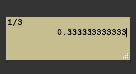
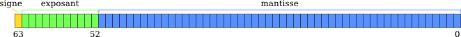
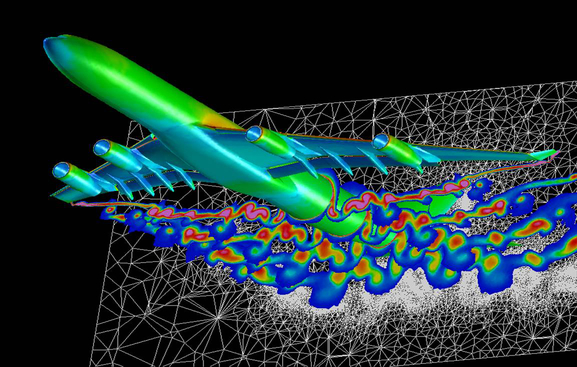

- Introduction
- Some floating point arithmetic reminders
- The different problems faced with numerical computation
- Stochastic control and estimation of rounding
- CESTAC on an iterative algorithm
- Going further: discussions on the validity of CESTAC
- Conclusion: CESTAC, but for what and for who?
- Bibliography
Introduction¶
Numerical computations are always tainted by errors. A typical example is when scientists simulate a physical system by a numerical method for which a mathematical study gives a bound on the error depending on some parameters. For example, with the Euler method, the error compared to the real solution decreases with the time step. If we did the numerical computation by hand, a time step that goes towards \(0\) would allow us to find the exact solution. Obviously, it is impossible, even for a machine, to have a time step of \(0\), but one might think that reducing it as much as our time budget or computing power allows is a good thing. Absolutely not!

Indeed, a second category of errors, not connected to the method but much more general, is the representation error . The problem is far more trivial, almost crude in the simplicity of its statement: it is impossible to represent an infinite quantity in memory space of finite size.
This leads us to consider the fact that, whatever the representation we chose, i.e., the way of translating a real number for the hardware, there will always exist numbers for which the representation will not be possible. An army of engineers and researchers worked to find and formalize a practical and intelligent representation, as a compromise between precision and ease of handling. This standardization process resulted in the IEEE-754 standard followed by most of the world’s computer hardware.
Warning
While a general reminder on the real numbers representation is provided, it is advised to have some notions about the representation of floating point numbers and basic notions of probabilities, in particular, on the construction of confidence intervals, in order to approach the theoretical part.
A question that naturally arises is: can I numerically control the errors which are induced by the representation error and then propagated during the calculation? This is what we will try to answer positively thanks to the CESTAC method, which stands for STochastic Control and Estimation of Rounding of Calculations (fr.: Contrôle et Estimation STochastique des Arrondis de Calculs).
An implementation of the method described in this article can be found in the following repository:

Some floating point arithmetic reminders¶
Let us first see how to represent a real number in scientific notation and in a any base
We denote by \(b\) the base of the arithmetic in which we will work, with generally \(b=2\) or \(b = 16\) for modern computation units. Then, any number \(x \in \mathbb {R}\) can be written by:
With \(\frac{1}{b} \leq m < 1\) and \(m\) the significand, possibly having an infinite number of digits after the comma, and \(e\) an exponant which is an integer expressed in base \(b\).
We can rewrite the significand in base \(b\) such that \(\sum_{i}^n m_ib^{-i}, 0 \leq m_i < b\) with \(n \in \mathbb{N} \cup +\infty\).
Example:
We consider \(x = 0,1_{10}\) that we would like to express using this representation. It is enough to write \(x = 0,1 \times 10^0\). Now, if we want to express \(x\) using a base \(2\), things are more complicated because the significand does not have a finite number of digits! Indeed, by successive divisions, we find that \(0,1_{10} = 0,000110011001100..._2\)!
As we mentioned in the introduction, since a computer has only a finite amount of memory, it is impossible for it to store an infinite amount of information. Worse, whatever the base \(b\) chosen, there exists an infinite number of numbers whose represensation include a significand having an infinite number of digits1. In other words, it is impossible to perfectly represent the set of reals with a computer. Real numbers are generally approximated by numbers called floating point numbers.
This is how for a machine, a real number \(x\) is represented by a floating number \(X\) which can itself be written as follows:
With \(\frac{1}{b} \leq M < 1\) and \(M\) the significand encoded on a finite number of digits \(n\) and \(E\) the exponent, also encoded on a finite number of digits. We can therefore write \(M\) in base \(b\) by: \(\sum_{i=1}^n M_ib^{-i}, 0 \leq M_i < b\), where this time the number of elements to be summed is always finite.

As these are only reminders, I am not going into all the intricacies of the IEEE-754 standard, and these explanations are sufficient to continue the article.
We consider the assignment operation (\(:=\)): \(\mathbb {R} \to \mathcal {F}\), where \(\mathcal{F}\) is the set of floating point numbers. That is to say the operation which associates to a real number its machine representation.
To concretely illustrate the banality of the thing via C++:
1 | |
For a given real \(x\), there exists a float \(X^+\) and a float \(X^-\) such that \(X^- \leq x \leq X^+\) and such that there is no float \(Y\) and \(Z\) such that \(X^- < Y < x < Z < X^+\). In other words, \(X ^ +\) and \(X ^-\) are the floats immediately greater than and less than \(x\).
If \(x\) is representable in an exact way, then we have equality between the three terms and the assignment operation \(X: = x\) is unambiguously defined.
If this is not the case, as in the above example with \(0.1\) in base 2, we must choose a representative between \(X^+\) and \(X^-\). At first sight, none of them are more legitimate to represent \(x\).
This is where the IEEE-754 standard comes in to offer four rounding modes to remove ambiguity about the assignment operation. Here is a brief description:
- Rounding towards \(+ \infty\) (or by excess): we return \(X ^ +\) except if \(x = X ^ -\).
- Rounding to \(- \infty\) (or by default): we return \(X ^ -\) unless \(x = X ^ +\).
- Round to \(0\): returns \(X ^ -\) for positives and \(X ^ +\) for negatives.
- Rounding to nearest: returns the machine number closest to \(x\).
An essential property of the IEEE-754 standard is that it guarantees that the result of a floating point operation is equal to the result of the corresponding real operation to which the rounding mode is applied rightafter. In other words, if we choose a rounding mode \(\text{Arr}\), \(a\) and \(b\) two real numbers whose floating point representations are \(A\) and \(B\), \(+\) a real operation, and \(\oplus\) its machine counterpart, then, the standard guarantees us that \(A \oplus B = Arr(a + b)\).
This property, known as correct rounding, is essential because it makes it possible to prove on a numerical algorithm or to obtain proven bounds for numerical results.
Finally, we can define the relative assignment error by the following formula: \(\alpha = \frac {X - x}{X}\). It is precisely this initial error of representation which propagates during the computation.
The different problems faced with numerical computation¶
As mentioned earlier, any algorithm that performs floating point computations gives an error-ridden result. When an algorithm is finite2, then the numerical error is the result of the propagation of rounding or truncation errors during floating point operations.
In the case of iterative algorithms, for example Newton’s method, it is also necessary to stop the algorithm after a certain number of iterations, optimal if possible, which is a problem considering that:
- if the algorithm is stopped too early, the solution obtained will not be a good approximation of the real solution. It is the rate of convergence which informs us about this, that is to say the mathematics behind a specific method;
- if the algorithm is stopped too late, additional steps will not bring more precision to the solution obtained, and worse, the propagation of errors can degrade the solution, until, for pathological cases, returning a result which has no meaning.
What is important here is that given an iterative numerical method, the objectives of the mathematician and the engineer are in a way opposed: the former would like to continue to iterate as much as possible (that is, as long as the time constraints allows it) because he knows that this leads to a better solution in theory, while the engineer tells us that we must stop at some point.
In reality, there are at least four interesting and central issues:
- For the mathematician: given some hardware and a system of representation, how can I obtain a better approximation of the solution to my problem?
Answer: find algorithms with higher convergence rate or methods to speed up convergence! In this regard, one might cite the method of Aitken’s Delta-2 or the \(\epsilon\)-algorithme. - For the engineer: for a given algorithm AND some hardware with a system of representation, how can we get a better solution approximation?
Answer: reorganize the operations within the algorithm to limit the error propagation while not changing the convergence rate! A generic technique of reorganizing the terms of a sum is called Kahan’s summation algorithm. - For everyone: for a given algorithm and its implementation, how can we get the best out of it?
Answers: Choose the most suited representation of real numbers (symbolic system,decimal32, etc. which generally requires better hardware performance) or increase the encoding size of reals (from simple to double precision or quadruple precision, etc. which only consists in increasing the number of bits to encode the significand and the exponent to represent real numbers, which again requires better hardware performance). - For the numericist: how to determine the optimal number of iterations to be performed by an algorithm, whatever the input data? How far is my numeric solution from its real equivalent?
Answer: Find methods to estimate the numerical precision of a result, which involves estimating the propagation of rounding errors!
CESTAC method attempts to solve the last problem and will be presented in the following section. However, as we will see below, we cannot do it without some knowledge about the other problems.
Question: Are you not exaggerating the computation errors a little and is it not ultimately just some considerations for researchers with long grey beards? Are mistakes so common and so important? From what I’ve read, the IEEE-754 standard allows precision to the order of \(10^{-15}\) in double precision so my results are at least as good right?
No, yes, and no. Let us take an extremely simple pathological case: \(x_n = ax_ {n-1} - b\), which is an extremely simple computation. Here is also a C++ implementation with a particular initialization:
1 2 3 4 5 6 7 8 9 10 11 12 13 14 15 16 17 | |
Which gives for output (directly available here):
1 2 3 4 5 6 7 8 9 10 11 | |
While the expected mathematical result is \(1\), constant for each iteration, we observe that after a few iterations on the machine there is a fast divergence towards infinity. After only 4 iterations, the number of significant digits between the exact actual result and its floating bias is 0!
Stochastic control and estimation of rounding¶
CESTAC core and error propagation¶
The algebra \(\mathcal{F}\) over the field of floating point numbers is not associative nor distributive. In other words, the order in which we perform our arithmetic operations has an impact on the result.
The correct rounding property ensures the commutativity.
{kind=link}
From now on, consider \(f\), a procedure acting on \(\mathbb {R}\), and its image \(F\), a procedure acting on \(\mathcal{F}\). Because of the non-associativity, the image of \(f\) is actually not unique and there are several procedures which mathematically transcribe \(f\) exactly. And obviously, these procedures, due to the roundings, will not return the same float.
Exemple:
Let the following function be \(f(x) = x^2 + x +1\). The most naive function on \(\mathcal{F}\) would be \(F_1(X) = (X^2 + X) + 1\) but we could also have \(F_2(X) = X^2 + (X + 1)\) or even \(F_3 (X) = X (X + 1) + 1\). It is obvious that on \(\mathbb{R}\) all these procedures are exactly the same because they return exactly the same result thanks to the properties of associativity and distributivity. On the other hand, this is not the case if we work on floats because all the intermediate results will be rounded. Thus, for a fixed \(X\), it is quite possible that \(F_1(X) \neq F_2(X) \neq F_3(X)\).
Numeric Example:
Consider floating-point numbers with 6 digits of precision. Consider \(x = 1.23456 \times 10^{-3}\), \(y = 1.00000 \times 10^{0}\) and \(z = -y\). If we perform the calculation \((x + y) + z\), we find \(1.23000 \times 10^{- 3}\), however, the calculation \(x + (y + z)\) will give \(1.23456 \times 10^{-3}\). We can therefore see that the order of operations matters.
As in practice, the algorithms are a succession of small computation steps, as illustrated above on the evaluation of a polynomial, the computation will propagate the errors operation after operation. In optimistic scenarios, the errors compensate each other or are too small and the result is remarkably close to what the precision of the representation allows (however, it is impossible to exceed 16 significant digits in double precision, by definition!), but in the worst case scenario, the result can be totally irrelevant.
Example:
Propagation of the addition error. Let us consider \(x\) and \(y\) two reals and their machine representations \(X\) and \(Y\), respectively tainted with an error \(\epsilon_x\) and \(\epsilon_y\). What happens when we add them?
The errors are added to each other and add to the exact result \(x + y\). If we add a third float to this result, we will get a new error term, etc. The result obtained will be even further from the exact result as the sum of the errors will not be negligible compared to the exact terms (here \(x\) and \(y\)).
In summary, from a procedure \(f\) over the field of real numbers, there are several procedures \((F_i)_{0 \leq i <K}\) that we can obtain by permuting the elementary operations and, which theoretically offer in the worst case \(K\) different results. On top of that, there is a perturbation of the result by the chosen rounding mode which further exacerbates the worst case 3.
The main idea behind CESTAC is to take advantage of the great variability of the results that can be obtained by a sequence of numerical computations. For this, we use some perturbations on the result of an operation and some permutations of the operands, in order to estimate the number of significant figures of a numerical result. By propagating the numerical errors in different random ways, we will be able to distinguish the variable part - the part stained with errors, or not representative -, from the fixed part - the exact part -.
Finding the number of significant digits¶
If we have a procedure \(F\) that we run \(N\) times with a random perturbation and permutation each time, we get a sample \(R = (R_0, R_1, ..., R_ {N-1})\) of results. We can therefore consider \(F\) as a random variable with values in \(\mathcal{F}\), with an expected value \(\mu\) and a standard deviation \(\sigma\). The expectated value \(\mu\) can be interpreted as the expected result of the algorithm, i.e. the floating point number that encodes our real solution \(r\). The error compared to this expectation, that is to say \(\alpha = |r - \mu|\) is the loss of precision that one is entitled to expect from performing numerical computations in floating point. The problem is that \(\mu\) is not known, and therefore, we have to estimate it.
In this context, with the hypothesis that the elements of \(R\) come from a Gaussian distribution (which is verified in practice), the best estimator of \(\mu\) is the mean of the sample \(R\): $$\bar R = \frac 1 N \sum^N_i R_i $$
Similarly, the best estimator of \(\sigma^2\) is given by: $$S^2 = \frac 1 {N-1} \sum^N_i (R_i - R)^2 $$
A classic use of the central limit theorem allows us to build a confidence interval for the exact value \(r\) for a threshold \(p\):
Where \(t_{N-1} (p)\) is the value of the cumulative distribution function of Student for \((N-1)\) degrees of freedom and a threshold of \(p\).
From this interval, it is possible to calculate the number of significant digits \(C\) of our estimator \(\bar R\):
where \(K\) depends only on \(N\) and \(p\), and such it that tends towards \(0\) with \(N\) increasing. The value of \(p\) is fixed in practice at \(0.05\), which makes it possible to obtain a confidence interval of \(95\%\). Here is now the value of \(K\) obtained as a function of \(N\), for \(p = 0.05\):
| N | K |
|---|---|
| 2 | 1.25 |
| 3 | 0.396 |
This may seem surprising but using a sample of size \(N = 3\) results in \(K\) being less than \(1\), i.e., on average, there is no significant digit loss for the sample \(R\). In fact, increasing this number is useless because the length of the interval evolving in \(\frac 1 N\), to obtain an additional significant figure, it would be necessary to multiply \(N\) by 100 (because of the \(\log_{10}\))!
Constructing the sample \(R\)¶
Now that we have the theory, we need to know how to construct a sample of results \(R\) that is as representative as possible of the multitude of results obtainable from our procedure \(F\).
For that, we have a perturbation function, pert, which for a particular float \(X\), returns a disturbed float \(X'\) such that \(X'\) is \(X\) for which we modified the last bit of its significand in a random and uniform way. In other words, we add to the last bit of significand \(-1\), \(0\) or \(1\) with a probability of \(\frac 1 3\).
This perturbation consists in choosing randomly among \(X^+\) and \(X^-\), which we mentioned in the first part, in order to simulate the propagation of rounding errors.
We use pert whenever an assignment is made, whether it is an initial assignment as a floating variable declaration, or the result of multiple computations.
We also have a permutation operator, perm, which for each assignment operator will randomly modify the term on the right by performing one of the permutations authorized by associativity and distributivity. In other words, it is a question of choosing between \(F_1\), \(F_2\) or \(F_3\) in the example above.
Remark:
In fact, in theory, we could go further by permuting all the independent operations between them, that is to say, by purely and simply reorganizing the algorithm as much as possible. In practice, it is not done, in particular because it is very complicated for a gain that is not very interesting.
Attention
In real life, we are aware of the various pitfalls posed by the stability of numerical computations and how to overcome them, in particular by correctly organizing our calculations (for example, adding numbers in ascending order limits the propagation of errors), or by using error compensation mechanisms (let us quote for example the Kahan summation algorithm). This is also the objective of problem 2. mentioned above. In fact, from the moment we consciously optimize the order of operations, the use of perm becomes unnecessary because it leads to a wrongly widened confidence interval, and therefore an overestimation of the errors (in addition to a significant additional computational cost).
Thus, we will not consider permutations in the following.
From there, there are two ways to use pert to create a sample \(R\) and estimate the number of significant digits of a numeric result.
Asynchronous version¶
The asynchronous version consists in performing our perturbations at each assignment, and building our sample \(R\) as the result of \(N\) calls to the procedure \(F\). In other words, the \(N\) calls are independent, hence the name asynchronous. Once the sample is at our disposal, we compute the number of significant digits a posteriori.
Illustration of the asynchronous method with an iterative sequence defined by \(X_n = F(X_ {n-1})\) and for initial term \(X_0\) with \(N = 3\):
Apparently logical, this method comes up against two major problems.
- As the propagation of the errors is not necessarily being done in the same way, it is possible that the executions of the procedure converge towards different real numbers, in which case the sample is inconsistent. This may be the case if the problem to be solved admits of several solutions for example.
- From one execution to another, as there are certainly conditional branches, two results can come from a series of different branches because of rounding errors. Therefore it is not relevant to compare these results.
For these two reasons, the asynchronous version is generally inapplicable.
Synchronous version¶
Conversely, the synchronous version consists in modifyng the sample at each assignment operation and using the empirical average as value for the conditional branches[^practice]. It is possible to give an estimate of the number of significant digits at any time because the sample is available at all times during the execution. In fact, this answers the two problems of the asynchronous version:
- At each step, the result is consistent with itself, it cannot be different solutions since there is never only one value which is used for the conditional structures.
- The series of branches will necessarily be unique by construction, which makes the final result consistent.
Illustration of the synchronous method on the same example as before:
Notice the synchronization points after each step, hence the method name.
CESTAC on an iterative algorithm¶
Now that we know how to determine the number of significant digits of a numerical result, we will focus on the optimal stopping problem. The exact solution to our problem is noted \(x^*\). We have an iterative algorithm, which gives at iteration \(k\), the approximate solution \(x_k\), and we know that this algorithm converges after a number of steps potentially infinite, that is to say that \(x_k \to x^*\).
Finally, we have an implementation of our algorithm which at each iteration provides an approximate solution \(X_k\) tainted by numerical errors.
A classic stop criterion for iterative algorithms at a given precision is the test \(|| x_k - x_ {k-1}|| <\epsilon\), where \(\epsilon\) controls the precision. A variant is given by \(|| x_k - x_ {k-1} || <|| x_k || \epsilon\). This test is extremely robust in usual arithmetic having infinite precision since it makes it possible to detect when an iteration no longer brings any significant gain in precision. Conversely, in floating point arithmetic, since all \(X_k\) are tainted with errors, the subtraction of very close terms leads to small values which may not be significant at all.
The worst possible scenario is the following: \(\epsilon\) is chosen too small, and the computational errors that have accumulated are too large compared to \(\epsilon\), so the algorithm will never converge, its solution will degrade to either converge towards an inconsistent value, or to diverge outright!
Definition (machine zero):
A value \(X \in \mathcal{F}\), the result of a numerical calculation, with a number \(C\) of significant digits, is a machine zero if \(X = 0\) and \(C> 1\) where \(X\) is arbitrary but \(C = 0\). We denote a machine zero \(\bar 0\).
Warning
The notion of machine zero should not be confused with the notion of epsilon machine nor with zero as represented in the IEE754 standard.
As CESTAC purpose is to determine the number of significant digits of a result, we can therefore use it to find the machine zeros and modify our stop test accordingly, which becomes the following one at the iteration \(k\):
- If \(C(X_k) = 0\) and \(X_k \neq 0\), then the result is tainted with an error greater than its own value and there is no point in continuing: we stop the algorithm.
- If \(|| X_n - X_{n-1} || = \bar 0\), we stop the algorithm since the difference between two iterations only represents computation errors.
- If the number of iterations exceeds a certain limit \(K\), the sequence is considered as non-convergent and the algorithm is stopped.
Going further: discussions on the validity of CESTAC¶
Note: This section is intended to discuss in a more advanced way the validity hypothesis and can therefore be put aside for a first reading, especially as it can turn out to be a little more technical.
There are several hypotheses which have been formulated in order to arrive at the formula for the number of significant digits and which lead to the following question: can we reasonably use a Student’s test in order to obtain the confidence interval? This is equivalent to wonder whether the estimator \(\bar X\) used is biased or not.
The estimator bias¶
Without making a proper demonstration (we refer the reader to the studies by the creators of the CESTAC method), we give the broad outlines justifying that the mean estimator is unbiased.
Theorem:
A result \(X\) of a perturbated procedure \(F\) can be written:
Where \(x\) is the exact result, \(n\) the total number of assignments and arithmetic operations performed by \(F\), \(d_i\) quantities depending only on the data and the procedure \(F\), \((\alpha_i)_i\) the rounding or truncation errors and \((h_i)_i\) the perturbations performed.
The bias of the estimator \(\bar X\) is the quantity \(E[\bar X] - x\). Assuming that the \((\alpha_i)_i\) follow a uniform distribution over the “proper” interval5, it is enough to correctly choose the \((h_i)_i\) to re-center the \((\alpha_i)_i\) and thus obtain the following result, neglecting higher-order terms:
Where the \(z_i\) are identically distributed and centered variables, so that \(E(X') = x\), i.e. the estimator is unbiased.
The hypothesis of the distribution of \(\alpha_i\) is validated when there are enough operations in the procedure \(F\), in other words that \(n\) is large enough. In fact, very precisely, the bias is not zero but we can show that it is of the order of a few \(\sigma\) which skews the final estimate by less than one significant figure.
Validity of the Student test¶
As we have seen, the hypothesis about the distribution of \(\alpha_i\) is satisfied in theory and in practice. But on the other hand, to conclude that the estimator is unbiased, we made an additional assumption: the higher order terms are negligible.
However, while it is easy to see that addition or subtraction does not create an error of second order, this is not the case for multiplication or division, since by considering \(X_1 = x_1 + \epsilon_1\) and \(X_2 = x_2 + \epsilon_2\), these operators are written:
The problem for multiplication is that if the respective errors \(\epsilon\) for the two operands are preponderant over the exact values \(x\), then the second order term becomes preponderant. For the division, the higher order terms become preponderant if \(\epsilon_2\) is preponderant w.r.t. \(x_2\).
Consequently, there are two complementary ways to ensure the hypothesis behind CESTAC are valid:
- Increase the precision of the representation, i.e., encode each real on more bits, which will reduce the \(\epsilon\). In other words, the answer to problem 3.
- Limit the propagation of calculation errors as much as possible, i.e., apply the recipes in response to problem 2.
One possible systematic approach is to include dynamic control over the outcome of multiplication or division operations, at a significant cost.
Conclusion: CESTAC, but for what and for who?¶
We have seen the different problems that appear when we perform floating point computations and we have given a robust technique to control the propagation of errors induced by these computations. After having presented the foundations of the method and the modalities of use, we applied CESTAC to the optimal stopping problem of an iterative algorithm. Finally, a last part was devoted to the discussion on the validity of the method and a sketch of proof.
The only question that has not been addressed, and which will serve as a conclusion, is: when to use CESTAC? It is obvious that the method presents a significant cost in terms of computation time. Therefore, it must be justified by a gain at least as important. The need for evaluation and error control is crucial, for example, for critical systems such as airplanes. For this reason, the method is widely used in the field of aeronautics, to control both simulations but also directly computations within on-board systems.

Bibliography¶
- Ingénierie du contrôle de la précision des calculs sur ordinateur, Michèle Pichat et Jean Vignes.
- Validité du logiciel numérique, Jean-Marie Chesnaux, support de cours dispensé à l’UPMC.
- Approche stochastique de l’analyse des erreurs d’arrondi : méthode CESTAC, Jean Vignes et René Alt.
- Handbook of Granular Computing, Witold Pedrycz, Andrzej Skowron et Vladik Kreinovich.
-
Let us give a succinct proof. By definition, a normal number is a number such that any finite sequence of bits occurs an infinite number of times in the significand of this number, and the probability of occurrence of the sequences is uniform. It is said to be normal in any base if whatever the base it is normal. Thanks to Borel-Cantelli lemma we prove that the set of non-normal numbers in any base has a null measure. Therefore, whatever the base, the probability that a number drawn at random on \(\mathbb{R}\) is normal, is 1. \(\square\) ↩
-
where finite is understood as a finite number of steps to find the solution to a problem. ↩
-
I stress that this is the worst case scenario, which is far from being the common practical scenario. However, standard deterministic studies reason mainly about the worst case scenario, which leads to an overestimation of the computation errors, sometimes rendering these methods obsolete. On the contrary, CESTAC makes it possible not to fall into this trap due to the very construction of the method. ↩
-
In practice, can also systematically use \(X_i\) for a given \(i\), which avoids having to calculate the average each time. ↩
-
This interval depends on whether we are in truncation or rounding mode. ↩